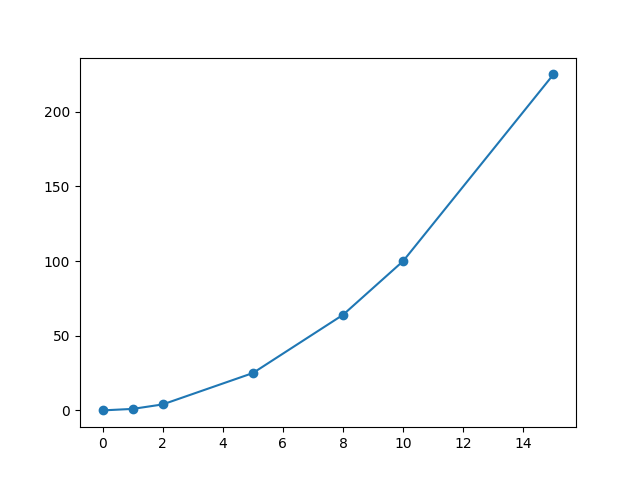

T6.2 Utilisation de bibliothèques⚓︎

L'utilisation de fonctions (ou de procédures) permet dans l'écriture d'un programme de ne pas répéter les mêmes portions de code, et de découper un programme en sous-programmes.
Il arrive aussi fréquemment que ces fonctions puissent être utilisées dans d'autres programmes : il est alors nécessaire de les stocker ailleurs que dans le programme lui-même.
Ces fonctions sont souvent regroupées par thème dans des fichiers .py appelés bibliothèques (library in english) ou modules.
Les objectifs de cette répartition des fonctions en modules - on parle de conception modulaire - sont multiples:
- rendre un programme plus lisible;
- répartir la programmation au sein d'une équipe;
- faciliter les tests.
Les modules peuvent donc être vus comme des «boîtes à outils» dont on va se servir uniquement lorsqu'on en a besoin. Il en existe un très grand nombre en Python, ce qui fait une des forces de ce langage.
6.2.1 Importer un module⚓︎
L'interpréteur Python propose quelques fonctions et types natifs qui sont toujours disponibles.
L'installation de Python sur un ordinateur comporte également une bibliothèque standard qui contient les modules les plus utilisés.
Exemples
Quelques exemples de modules très fréquemment utilisés:
math: toutes les fonctions et constantes mathématiques;random: fonctions permettant de générer des nombres pseudo-aléatoires;time: fonctions qui donnent accès au... temps;os: permet de manipuler les chemins d'accès aux dossiers et fichiers.
Mais attention, ces modules ne sont pas disponibles dans un programme tant qu'on ne les a pas importés, c'est-à-dire chargés en mémoire de l'interpréteur Python.
Import de modules
Pour importer un module, on utilise le mot-clé import. On importe les modules en début de programme.
Par exemple, pour pouvoir utiliser le module random (et tout ce qu'il contient):
import random
6.2.2 Consulter la documentation d'un module⚓︎
Il suffit pour cela d'utiliser (en console) la fonction help en passant le nom du module en argument. Par exemple, pour consulter la documentation du module random (faites-le !):
>>> help(random)
On y trouve beaucoup de choses... en particulier ce qui nous intéresse pour l'instant: les fonctions disponibles.
Par exemple, on y trouve la fonction randint que vous avez certainement utilisée en classe de seconde. Ou pas.
randint(a, b) method of random.Random instance
Return random integer in range [a, b], including both end points.
6.2.3 Utilisation d'une fonction d'un module⚓︎
Notation préfixée
Une fois le module importé, on peut accéder aux fonctions (ou autres contenus) en préfixant les noms par celui du module.
>>> import random
>>> random.randint(1, 6)
4
NameError:
>>> import random
>>> randint(1, 6)
Traceback (most recent call last):
File "<pyshell>", line 1, in <module>
NameError: name 'randint' is not defined
Si vous trouvez ça pénible de devoir écrire à chaque fois le nom du module en préfixe, il y a cependant un avantage criant : dans un programme conséquent, on sera amenés à importer plusieurs modules, dont on ne peut connaître toutes les fonctions... et il y en a peut-être qui portent le même nom... Il faut donc savoir dans quel module utiliser la bonne fonction!
Documentation d'une fonction
Comme vous l'avez remarqué, on peut vite se perdre dans la documentation d'un module. Si on connaît le nom d'une fonction dont on veut la documentation (pour se rappeler par exemple de ses paramètres, du type de valeur renvoyée), on peut utiliser la fonction help uniquement sur la fonction elle-même:
>>> help(random.choice)
Help on method choice in module random:
choice(seq) method of random.Random instance
Choose a random element from a non-empty sequence.
>>> random.choice(["C-3PO", "R2D2", "BB-8", "K-2SO"])
'BB-8'
6.2.4 Autres imports⚓︎
Import sans préfixe
On peut également importer uniquement une fonction d'un module si on sait qu'on n'aura besoin que de cette fonction. Pour les raisons évoquées plus haut, on évitera le plus possible cette utilisation.
La syntaxe est la suivante, et elle permet de ne plus préfixer le nom de la fonction:
>>> from random import randint
>>> randint(1, 6)
2
Alias
Un moyen de ne pas rendre l'utilisation de noms de fonctions trop verbeux (par exemple le module de tracé de courbes matplotlib.pyplot), on peut renommer le module pour lui donner un nom plus court (alias) à l'aide du mot-clé as.
>>> import random as rd
>>> rd.randint(1, 6)
6
| 🐍 Script Python | |
|---|---|
1 2 3 4 5 6 7 | |
Ce programme donne le graphique:

6.2.5 Exercices⚓︎
Exercice 1
En console:
- calculer la racine carrée de 25, puis de 2;
- calculer \(\pi^2\).
La fonction racine carrée (square root in english) se trouve dans le module math. La chercher dans ce module, qu'il faudra importer. Regarder à la fin de la documentation les constantes...
Exercice 2
Lien Capytale : 84c6-132796
Exercice 3
L'objectif de cet exercice est de mesurer le temps d'exécution d'un programme. On va pour cela utiliser le module time.
En console:
- Importer le module
time. - Consulter la documentation de ce module. Repérer dans la description les deux façons de représenter le temps. Nous utiliserons la première.
- Noter la date correspondante à "the Epoch".
-
Trouver1 dans les fonctions celle qui permet de récupérer le temps courant en secondes depuis the Epoch.
-
Maintenant qu'on dispose d'une telle fonction, qui renvoie donc le temps courant au moment où on l'appelle dans le programme, comment l'utiliser pour mesurer le temps d'exécution d'un programme?
On va maintenant utiliser la fonction time.time pour mesurer le temps d'exécution du programme (très inutile) suivant:
| 🐍 Script Python | |
|---|---|
1 2 | |
- Importer le module
time. - Copier-coller le code ci-dessus.
- Affecter à une variable
t0le temps courant avant la bouclefor. - Affecter à une variable
t1le temps courant après la bouclefor. - Ajouter une instruction pour afficher le temps d'exécution du programme.
Pour indication, j'obtiens un temps de l'ordre de 0.3 secondes sur Basthon/Capytale et de 0.03 secondes sur ma machine personnelle.
-
Indice en bas de votre écran: c'est l'antépénultième. ↩